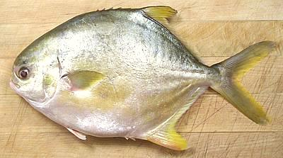

Pompano (Golden / Florida)

[Trachinotus carolinus (Florida Pompano, Common Pompano);
Trachinotus blochii (Golden Pompano, Asian Pompano)]
Pompano is a highly preferred eating fish. The specimen in the photo was
marketed as "Golden Pompano" which is supposed to be T. blochii but
it looks more like Florida Pompano T. carolinus. T. blochii has
a much longer dorsal fin. Florida wild caught pompanos are very expensive
(actually this fish is found from Massachusetts to Brazil). Both species are
farmed commercially and I wouldn't be at all surprised at hybrids of the two.
T. carolinus can grow to 25 inches and T. blochii to 43 inches
but the photo specimen was 12-1/4 inches and weighed 1 pound 9 ounces,
at the high end of market size here in Los Angeles.
More on Pompano Family
This pompano is a medium flavor fish with flesh that holds together
very well for all modes of cooking, and it's shape fits pans and steamers
better than most fish do. Frying, steaming, baking and poaching whole or
as fillets all work well. The flesh is white except for a darker layer
right under the skin, but that dark flesh does not have a strong or
oily flavor.
Buying:
This fish is found in all the Asian fish markets
here in Southern California. It is heavily farmed and almost always
available. Because it is very often cooked whole, that's the way it is
normally sold. Farmed Pompano is quite economical for a premium fish -
I've purchased whole fish as low as 2018 US $1.99 / pound (still frozen),
but it is more commonly sold on ice for 2018 US $2.99 to $3.99 / pound .
Scales:
Golden / Florida pompano has only an incomplete
covering of tiny scales that scrape off as a slush without making a mess.
Cleaning:
This is a Deep Bodied Fish, but it has no
hard keel, so work with it by our instructions for
Cleaning and Filleting Round Bodied
Fish. The main problem for cleaning is the short length of the
body cavity if you are prepring it head-on, but it's sufficient to get
your fingers into. The gills pull rather hard, so a strong pair of long
nose pliers is a great help. There are also large stone-like lumps in
the throat for crushing shells, and the pliers help here too. They are
also good for reaching soft stuff that's hard to get at with your
fingers.
Filleting:
This is about as easy a fish to fillet as
you're going to find. The bone structure is complete and easy to follow
with the knife and you can end up with a "see through" skeleton with
almost no flesh on it. When you get to the rib cage, just cut the ribs
from the backbone with kitchen shears. The ribs are thick and hard, and
pull quite cleanly with long nose pliers. There is also a row of
substantial centerline pin bones for the length of the body cavity -
pull them straight forward.
Skin:
The skin is fairly tough and feels a little leathery,
but has no strong or off flavor. Amazingly, it has no shrink when fried, or
when cooked by other means. In fact, you can poach a skin-on fillet and, when
it hits the hot court bouillon, it actually bends slightly away from
the skin side. This makes Pompano ideal for steaming, baking or poaching
whole. Once cooked, the skin is very tender.
If you wish a skinless fillet, the standard long knife and cutting board
Method works fine, but takes a bit of muscle
as the skin adheres strongly to the flesh. The only problem is the width of
the fish. Cutting the fillets lengthwise down the centerline makes skinning
easier. The skin is easily peeled from a cooked fish if you desire to do that.
I see little point in removing the skin from this fish.
Yield:
A 1 pound 9 ounce fish yielded 14-1/4 oz of fillet
skin-on (57%), 12-3/8 ounces skinless (50%) - a very good yield.
Stock:
The head, bones and fins make a very nice fairly
light soup stock. There is a fair amount of oil, but this is easily removed
using your gravy separator. The oil does not have a strong flavor.
See Method.
sf_pompcz.html 070616 r101124 - www.clovegaren.com
©Andrew Grygus - info@clovegarden.com - Photos on
this page © cg1 - Linking to and
non-commercial use of this page permitted